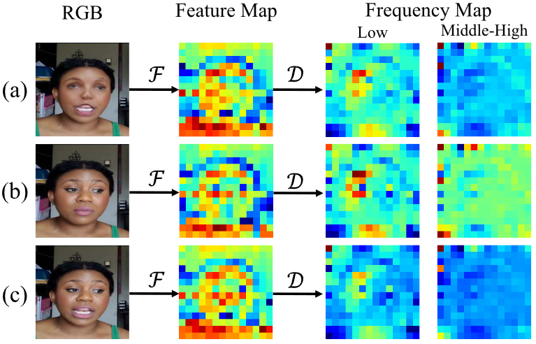
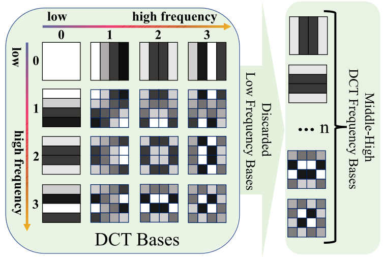
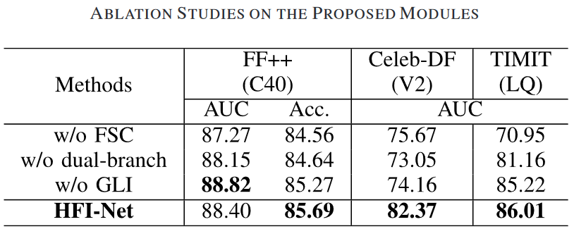
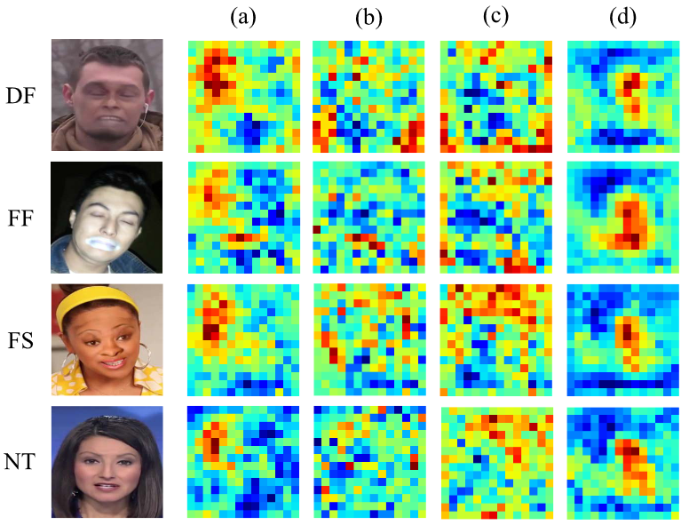
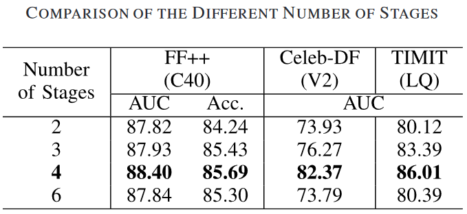
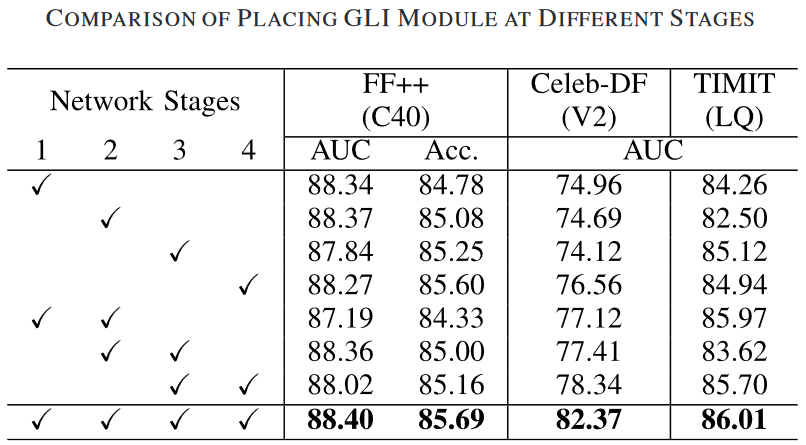
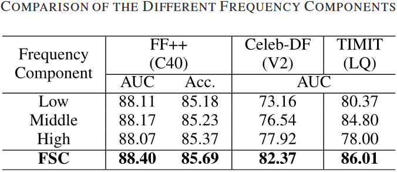
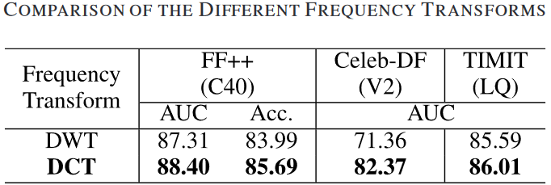
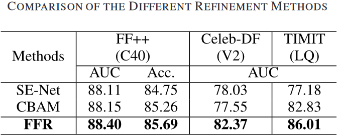

1. 介绍
使用结合CNN和Transformer的双流网络来融合伪造人脸的局部和全局伪造信息，进而提高模型的泛化能力。同时使用高频信息在CNN和Transformer之间交互，实现更通用和鲁棒的伪造检测。
低频信息和中高频信息通常表现出不同的特征，其中低频分量主要包括图像的自然内容信息，中高频分量则主要包含混合边界、模糊伪影和棋盘格(checkboard)等细粒度信息。
主要贡献如下：
- 提出了一种用于人脸伪造检测的双流网络，分层频域辅助交互网络（Hierarchical Frequency-assisted Interactive Networks, HFI-Net）。
- 我们设计了一个新颖的频域特征改进模块（Frequency-based Feature Refinement，FFR）来提取RGB特征上的中高频信息，充分利用更通用和鲁棒的频域特征，避免了空间伪影的脆弱性。
- 我们提出了一种共享和频域辅助的全局局部交互模块（Global Local Interaction, GLI），该模块放置在HFI-Net的多级层中，以在全局上下文和局部特征之间进行有效的交互。
2. 方法
2.1 概述
HFI-Net是由CNN分支和Transformer分支组成的双流网络，旨在捕获全局上下文信息和局部细节信息。
Transformer分支的backbone是ViT。CNN分支有一个瓶颈卷积(Bottleneck)和四个可分离阶段，其中瓶颈卷积包含两个3x3卷积层用于提取边缘和纹理等初始局部特征；每个可分离阶段有三个可分离卷积块组成，以及阶段输入和输出之间的残差连接。
GLI模块放置在HFI-Net的每个阶段，由两个FFR模块组成，用于融合全局和局部信息，并在学习中高频伪造痕迹的同时抑制共享的高级语义特征。
Transformer的输入为$x^g\in\mathbb{R}^{T\times D},\ T=196,\ D=768$，bottleneck输入为$x^l\in\mathbb{R}^{C\times H\times W},\ C=768,\ H=W=14$。在CNN分支中没有下采样操作，故特征维度不会改变。
最后，每个分支使用一个分类器进行训练。在训练阶段，采用交叉熵损失作为损失函数。在测试期间，将两个分类器的输出的均值作为最终预测结果。
2.2 FFR (Frequency-based Feature Refinement)
-
DCT
-
频率选择准则（Frequency Selection Criterion, FSC）：
与高频信息相比，CNN倾向于强调低频通道，其中包含图像的背景和真实部分；同时，已有许多研究证实了频域中的真实人脸和伪造人脸之间存在差异。如下图，伪造人脸和真实人脸在RGB图像，RGB特征图和低频特征图上几乎一致，但在中高频特征图上存在关键差异。
所以本文在RGB特征图上使用2D DCT提取中高频分量，如下图，假设n表示提取的中高频基数，将这n个频域特征拼接在一起得到$\tilde{X}_{u,v}=cat[F_i,\dots,F_n]$。其中用到了FcaNet: Frequency Channel Attention Networks。
 -
Frequency-Based Feature Refinement（FFR）：
聚合特征T： $$ T=\sum_{h=0}^{H-1}\sum_{w=0}^{W-1}\tilde{X}_{h,w} $$ 用一个MLP层（2个全连接层）和一个sigmoid函数$\sigma$来生成注意力权重： $$ W=\sigma(MLP(T)) $$
2.3 Global-Local Interaction Module（GLC）：
-
Frequency-Assisted Global-Local Interaction (GLI) Module：
GLI 模块利用FFR模块得到频域注意力权重，通过使用注意力权重和残差连接特征获得最终输出： $$ X^g_{freq}=X^g+W^l\odot X^g\\\ X^l_{freq}=X_l+W^g\odot X^l $$
-
Multi-Level Frequency Feature Extraction：
浅层特征可以捕获局部区域的细微差异，但随着模型越来越深，人脸的高级语义特征仍然包含原始人脸和操纵人脸的许多共同特征。高级语义信息对人脸检测有负面影响，可能导致模型过拟合而导致泛化性能差。所以将GLI模块插入双流网络的每个阶段来增强局部伪造线索并抑制RGB特征图上共享的高级语义信息。
3. 实验
3.1 数据集和设置
- 类内实验：FF++
- 未知数据集实验：
- Celeb-DF(V2)：590+5639
- TIMIT：320+640
- DFDCp：1131+4113
- UADFV：49+49
- 未知伪造方法实验：GID-DF/GID-FF，在DF/FF上训练，其余部分测试
- 未知扰动实验：DeeperForensics-1.0 (DFo)，60000+
- 实现细节：
- backbone：ViT(ImageNet-1K), CNN(randomly init).
- optimizer: Adam; lr:2e-5; weight decay=1e-7
- trainset: FF++(C40)
3.2 模块分析
在FF++(C40)上训练，测试指标为帧级AUC。
-
消融实验：测试结果和可视化结果如下图，w/o FSC表示使用所有频域信息进行训练而非中高频信息；w/o dual-branch表示只使用ViT；w/o GLI表示不使用GLI交互模块。可视化结果中(a), (b), (c)和(d)分别对应消融实验的四种情况，可见HFI-Net能够对操纵区域有较高的响应。
 -
不同层级的交互作用分析：下图分别是将模型分割为n个阶段和在哪些阶段设置GLI模块的消融实验。可见，将模型划分为4个阶段，并在每个阶段都设置GLI模块能达到最佳性能。
 -
不同频率成分分析：如下图，FCS方法提取中高频的方法由于其他频率选择方法，对于未知的测试场景，中高频的特征比单频（低，中，高）更具一般性。
 -
对2D DCT的分析：实验测试不同U(V)参数的性能。
$$ F^{2d}_{u,v}=\sum_{i=0}^{H-1}\sum_{j=0}^{W-1}{x^{2d}_{i,j}B^{i,j}_{u,v}}\\\ B^{i,j}_{u,v}=\cos(\frac{\pi u}{U}(i+\frac{1}{2}))\cos(\frac{\pi v}{U}(j+\frac{1}{2})) $$
-
不同频率变换方式的分析：对比DWT（小波换换）和DCT，DCT更适合这个网络架构。DWT捕获频率信息的同时会对特征图进行下采样，可能会损害与伪造区域相关的注意力权重。
思考：使用DWT时将FFR中的
FcaNet修改为WaveNets? -
不同特征细化方式的分析（FFR）：对比
SE-Net和CBAM，本文的FFR模块强调中高频的伪造线索，抑制图像在空域上的原始部分和在RGB特征上的高阶语义信息，提高了泛化性。 -
不同融合方式的分析（fusion）：比较特征图fusion和最后输出的fusion。
3.3 和近期工作的比较
- 和SOTA对比：
- 未知数据集泛化性测试：下图评价指标为Image-level AUC
- 未知伪造方法泛化性测试：Image-based Video-level AUC
- 未知扰动的鲁棒性测试：Image-based Video-level AUC
- 计算复杂度对比：Image-level AUC